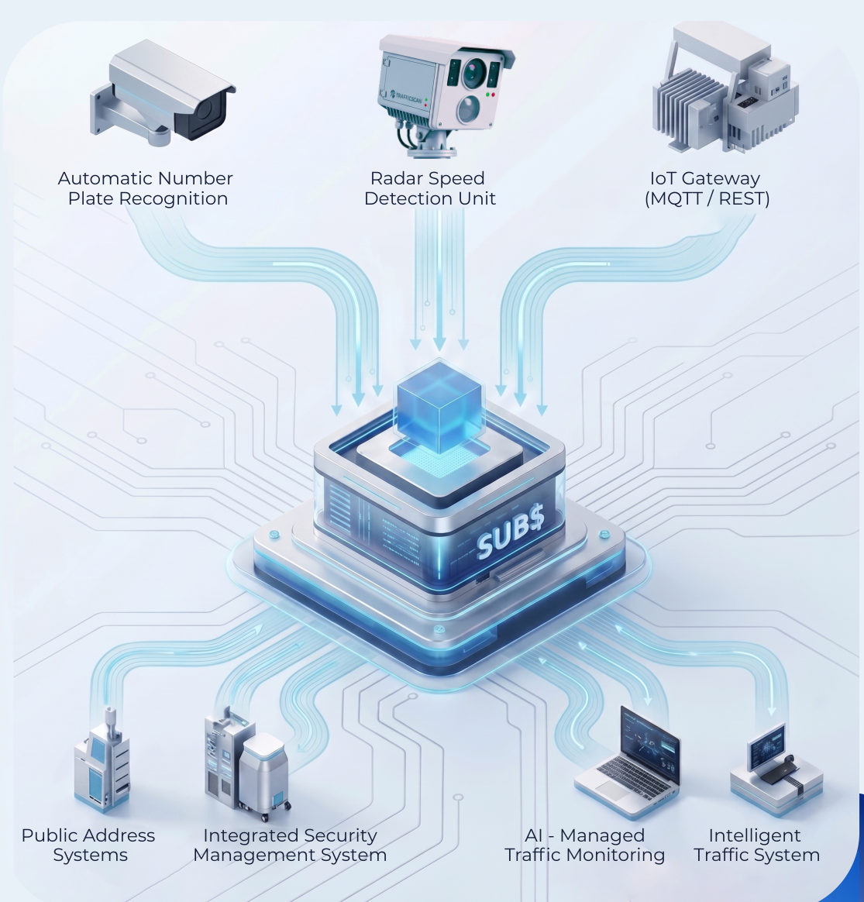
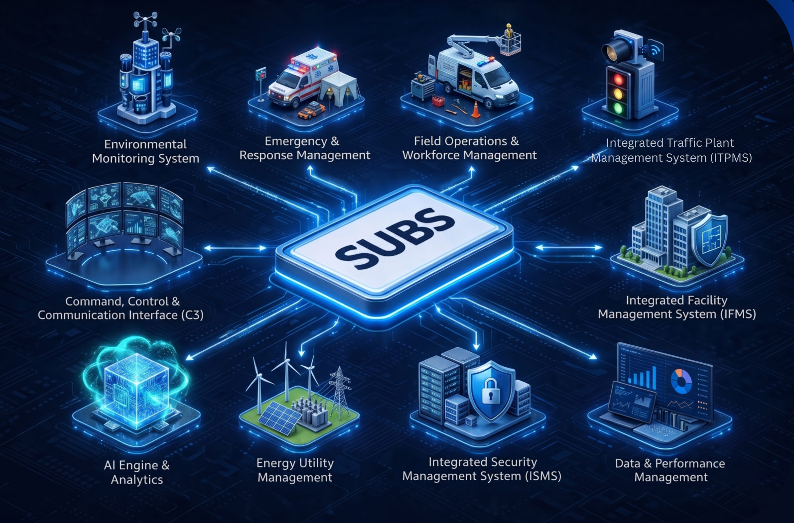

Unifies surveillance, operational technologies, IoT devices, enterprise applications and field operations into a single command environment — helping operators move from reactive monitoring to proactive command.
Operational value
01
Faster incident awareness and response
02
Improved cross-team and cross-agency coordination
03
Higher enforcement and operational efficiency
04
Stronger governance, auditability and compliance readiness
ATT Systems (India) Private Limited · Part of the ATT Systems Groupattsystemsgroup.in
Platform overview
One platform. Multiple critical operations.
Modern cities, transport networks, critical infrastructure and large estates often rely on disconnected systems. This fragmentation slows response, limits visibility and increases operational risk.
The Smart Unified Backend System (SUBS) is an ATT-owned enterprise backend and operational intelligence platform. It is designed to integrate, orchestrate, and provide analytics and information services in support of core enterprise systems and government operations.
Built on ATT's in-house software engineering capabilities, SUBS combines real-time situational awareness, AI-assisted analytics, workflow automation and digital twin simulation. By correlating inputs from surveillance infrastructure, IoT devices, traffic systems, access control, enterprise platforms and field operations, SUBS delivers a live operational picture across facilities, campuses, transport corridors and city-scale environments.

Why SUBS?
Unify operations across multiple critical domains
Improve response with AI-assisted alerts and workflows
Enhance decisions with real-time operational intelligence
Ensure resilience through scalable system architecture
Backed by implementation, SLA and enterprise support
Compared with fragmented point solutions
SUBS provides
Rather than
A unified command environment
Isolated systems
Cross-domain visibility
Siloed monitoring
AI-assisted operational intelligence
Basic alerting
Flexible integration
Closed ecosystems
Enterprise-scale deployment readiness
Limited-use applications
SUBS — Smart Unified Backend System02
Key core capabilities
From live awareness to coordinated action.
Real-time situational awareness
Unified map-based operational dashboard
Live visibility across assets and alerts
Single interface for system oversight
Dynamic emergency management
Rapid incident triage and escalation
Coordinated response and evacuation workflows
Crisis dashboards and lockdown control
AI-assisted operational intelligence
Anomaly detection and pattern analysis
Risk identification and early warnings
Predictive insights for faster response
Mobile field operations
Mobile tasking and incident access
Field evidence capture and syncing
Offline support for remote operations
Intelligent enforcement & governance
Automated violation and exception detection
Structured evidence with metadata records
Audit trails for enforcement transparency
Access & security intelligence
AI-driven access event validation
Video-linked verification and review
Mobile credentials and central control
The connected SUBS ecosystem

SUBS — Smart Unified Backend System03
Operational intelligence & digital twin
From monitoring to predictive command.
SUBS transforms data into decision-ready intelligence — supporting faster action, better planning and stronger long-term operational resilience.
Decision support & intelligence
Alert correlation for early event detection
Dashboards and KPI monitoring for oversight
Audit-ready reporting and SLA visibility
Trend and risk analytics for planning
Access insights for security readiness
Digital twin simulation
3D digital twin for operational planning
Evacuation and crisis rehearsal support
Infrastructure utilisation analysis
Scenario testing for preparedness
Live data improves disruption readiness
Open interoperability
Integrates with legacy and third-party systems
Supports modernisation without full replacement
Enables cross-domain data exchange
Supports cross-agency operational connectivity
Applications across sectors
Government & public safety
Safe city and transport operations
Emergency coordination and monitoring
National infrastructure oversight
Commercial & enterprise operations
Industrial estates and campuses
Healthcare and transport environments
Mixed-use and security operations
Environments needing unified governance
Centralised visibility across operations
Controlled workflows and coordination
Multi-stakeholder operational management
Secure and accountable governance support
Transforming operations through unified intelligence
Each phase is reviewed against agreed deliverables, test outcomes and acceptance criteria, and confirmed jointly by ATT and the customer before moving on. Timelines vary by site scale, number of integrations and deployment model.
SLA & enterprise support
Agreed service levels covering availability targets, incident response priorities and recovery objectives. ATT supports deployments with:
Implementation and integration services
Platform configuration and workflow customisation
Ongoing maintenance and technical support
Security updates and platform enhancements
Advisory collaboration for evolving requirements
Commercial model
Platform licensing
Annual subscription or support-based models
Module-based scope packaging
Integration, deployment and customisation services
Example modules
Traffic operationsSurveillance & video operationsAccess control & security governanceEmergency management & command
Customer readiness
ATT leads solution design, configuration, integration, testing and deployment coordination. Customers typically provide a stable network and power environment (UPS where required), a server room or hosting environment, access to existing systems and data sources, nominated project, IT and operational representatives, and site permissions.
SUBS — Smart Unified Backend System06
Sovereign-ready, AI-powered unified command and operational intelligence platform.
Phone+91 93792 55836 · General +91 99024 76871 · General +91 93792 55835 · Sales
Websiteattsystemsgroup.in
SUBS is powered by ATT Group. All associated intellectual property rights are reserved. ATT Systems (India) Private Limited is part of the ATT Systems Group.